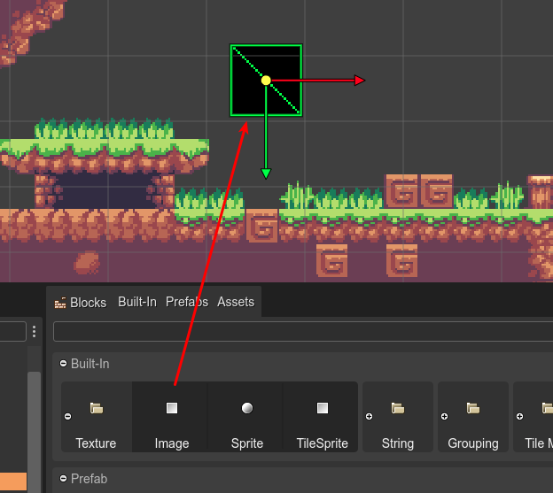
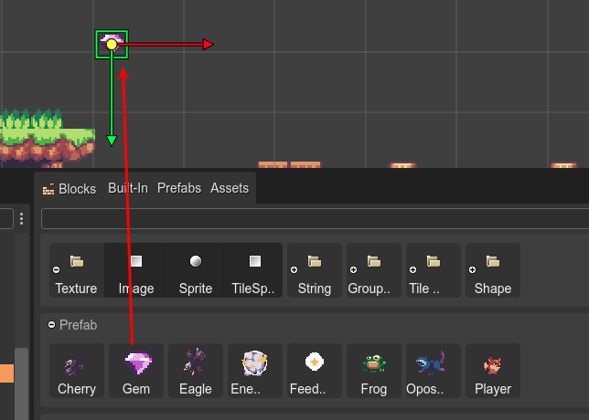
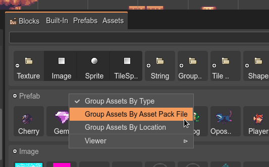
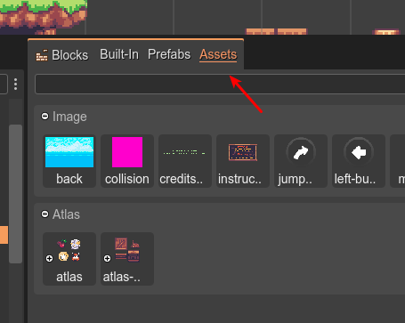

Blocks view integration
When the Scene Editor is active, the Blocks view shows the “blocks” you can get and drop into the scene, to create new objects. These are the blocks:
Built-in types. Phaser types and other Phaser Editor 2D related types.
Images packed in an Asset Pack file.
The frames of a sprite-sheet or texture map defined in an Asset Pack file.
Bitmap Fonts packed in an Asset Pack file.
The prefabs you created.
The first items shown in the Blocks view are the primitive object types supported by the Scene Editor. You can drag on type on drop it into the scene to create an instance of the type, with the default values.
In case of images, sprites or tile-sprites, the new instance does not contain a texture. If you want to set a texture to the object, you can select one in the Texture section.
However, if you drop an image or texture frame into the scene, the editor creates a new Image object and sets the dropped texture as the object’s texture.
Maybe, instead of an Image, you need to create a TileSprite with the same texture, in that case, you can just convert it to a TileSprite.
If you drop a BitmapFont, the editor creates a Bitmap Text.
If you drop a Prefab, the editor creates an instance of it.
The context menu shows different options for grouping the assets: by type, by Asset Pack file, and by file location:
Also, the Blocks view’s tab, shows “tab sections” which you can select for filtering the content:
Notice that there are three options:
Built-in: only the built-in types are shown in the view.
Prefabs: only the prefab files are shown.
Assets: only the assets defined in Asset Pack files are shown.